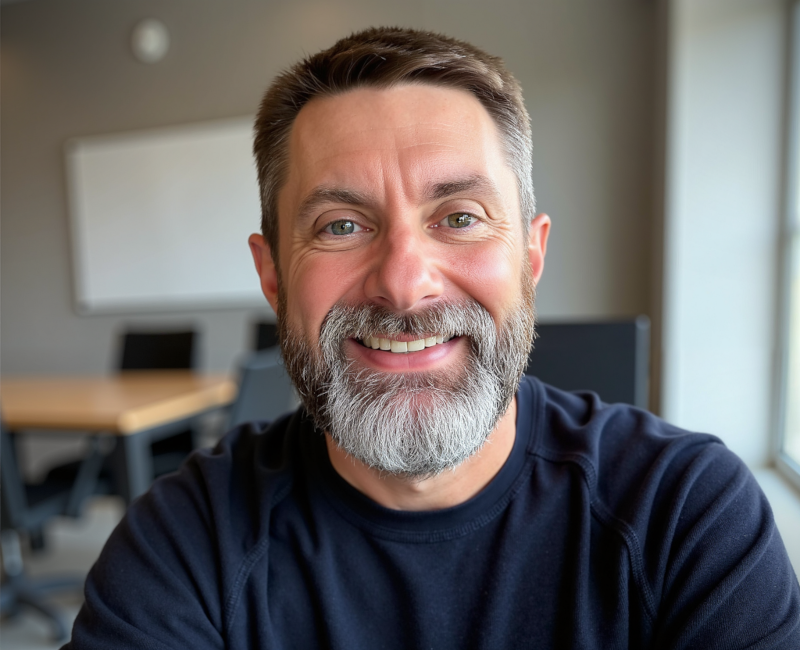
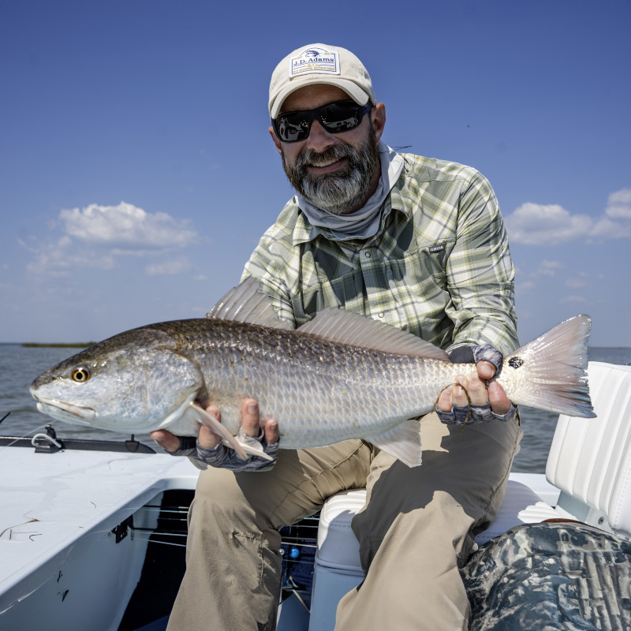

Senior Software Developer and Integrations Manager
Passionate technologist with 10+ years of experience building scalable solutions and leading cross-functional teams. Dedicated to creating products that make a meaningful impact on users' lives.

With over two decades of experience in the technology industry, I've had the privilege of working on projects that span from early-stage startups to enterprise-level systems. My journey has been driven by a genuine curiosity about how technology can solve real problems and improve people's lives.
Throughout my career, I've worn many hats—developer, architect, team lead, and mentor. I've learned that the best solutions come from understanding not just the technical challenges, but the people and processes behind them. This holistic approach has helped me build systems that are not only robust and scalable, but also intuitive and user-friendly.
What excites me most about technology is its constant evolution. I'm passionate about staying current with emerging trends, from cloud architecture and microservices to AI and machine learning. But I also believe in the fundamentals—clean code, solid architecture, and effective communication remain as important as ever.
Beyond the technical realm, I'm committed to giving back to the community. I enjoy mentoring aspiring developers, speaking at local tech meetups, and contributing to open-source projects. I believe that knowledge grows when shared, and I'm always eager to learn from others as much as I am to teach.
Express Employment International
Participated in digital transformation initiative while building and leading integration team. Started by modernizing IBM iSeries systems with Visual LANSA, then researched and selected MuleSoft as the enterprise integration platform. Established hybrid MuleSoft platform with on-premise runtimes and CloudHub, progressing to manager and senior manager roles. Currently leading team of 6 MuleSoft developers as part of the "Integration Hub" strategy.
Paycom
Worked with a team developing a Windows Forms application in C# that maintained tax documents.
MTM Recognition
Developed web-based applications for internal and external customers using primarily C# and Java. Conducted research and evaluation of new technologies for system modernization, with expertise in Visual LANSA for IBM AS400/iSeries platforms. Implemented and maintained AWS infrastructure while mentoring new hires.
Tarleton State University
Developed numerous web applications for faculty and staff using ASP and JavaScript. Responsible for all phases of web application development including requirements gathering, analysis, implementation, deployment, maintenance, training, and demonstrations.
The Innovation Group
Web and COOL:Gen developer for an insurance policy administration (IPA) application. Contributed to both frontend and middleware development, leveraging web technologies and COOL:Gen framework.
Tarleton State University
1997 - 2000
MuleSoft
January 2022
Passionate angler specializing in fly fishing for Redfish in inshore waters. Love the challenge of pursuing these powerful fish.
Dedicated craftsperson creating handmade furniture and home projects in the workshop.